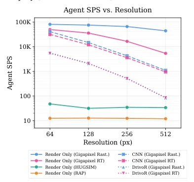
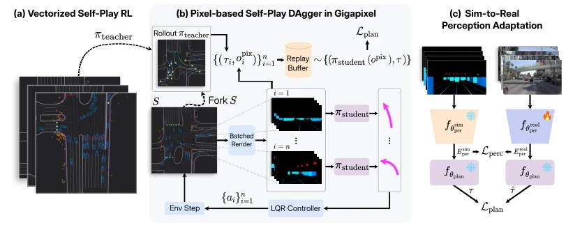
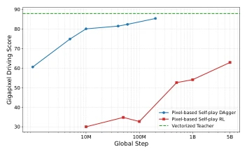
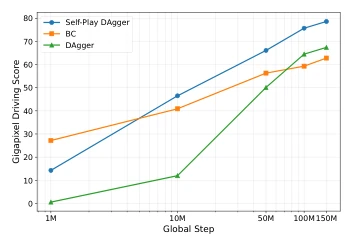
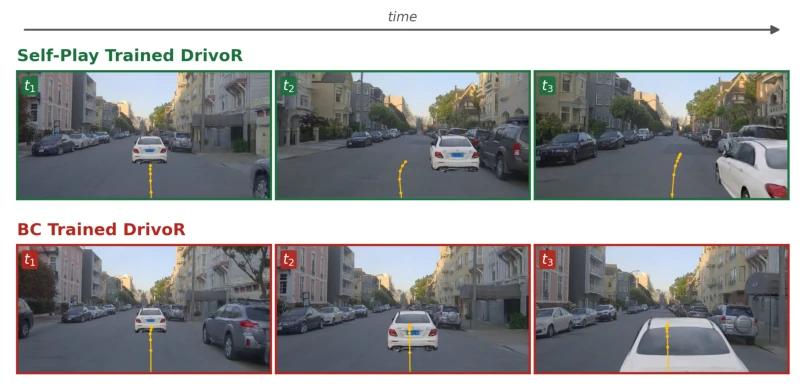
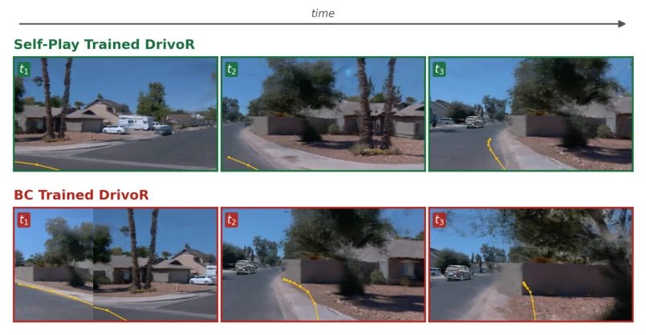
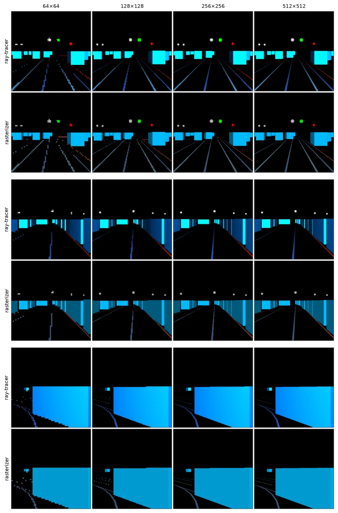

This paper both pours cold water on and adds fuel to the fire of the "end-to-end autonomous driving" self-play (Self-Play) craze. It cools down because the simulator Gigapixel it uses is a "paper-cutout" world, having only bounding boxes, without real lighting and weather; it heats up because it proves that doing self-play in pixel space is feasible, as long as physical realism is not taken too seriously. The core trick is "Self-play DAgger", using vectorized RL teachers to distill pixel students, retaining closed-loop feedback while avoiding the pitfall of low sample efficiency in pixel RL. However, this "teacher teaching student" model ultimately has information asymmetry, and sim-to-real transfer still relies on paired data, remaining a distance from true "unsupervised". It is more like an engineering compromise than an ultimate algorithmic breakthrough, but indeed provides a new path for large-scale training.
End-to-end models rely on offline human data (Behavior Cloning, BC) for training, possessing structural flaws. The BC dataset has limited state coverage, leading to policy fragility under out-of-distribution states, and lack of closed-loop feedback leads to compounding errors [13, 15]. Existing self-play methods are mostly based on vectorized bird's-eye view (BEV) observations [16, 17], unable to directly train pixel-level policies. However, high-fidelity simulators (e.g., HUGSIM [27]) have throughput too low to support large-scale self-play. Therefore, a solution is needed that can support pixel input and provide a high-throughput closed-loop training environment.

Figure 1: Gigapixel Throughput vs. Resolu- tion. Agent steps per second (SPS) across ren- dering resolutions and policy architectures on 1 NVIDIA A100L GPU. Render Only isolates ren- derer throughput without policy forward or back- ward passes. CNN is a simple CNN, and DrivoR [21] is a transformer-based architecture. CNN and DrivoR throughputs are reported in an RL train- ing loop. The gap between the rasterizer (Rast.) and ray-tracer (RT) throughput narrows as model complexity increases, indicating that Gigapixel rendering ceases to be the throughput bottleneck. For comparison, we report HUGSIM and RAP throughputs using their public code.
The overall process is divided into three stages: 1. Vectorized Teacher Training: Train a lightweight teacher policy [16] using self-play RL in an abstract simulator, this policy is based on vectorized observations, low computational cost. 2. Pixel Student Distillation: Propose Self-play DAgger, in Gigapixel simulator, all agents controlled by student, teacher parallel rollout generates trajectory targets, distill student policy through DAgger. This is much more sample efficient than direct pixel RL, and solves the mismatch between trajectory output and RL control output. 3. Sim-to-Real Transfer: Freeze planning head, only fine-tune perception backbone, use paired sim-real data to align features. Gigapixel's core innovation lies in GPU batch-based rasterization/ray-tracing rendering, supporting 50k agent steps/sec, though it simplifies the scene but retains geometric structure. In the DAgger objective, student state distribution is determined jointly by all agents, increasing multi-agent interaction diversity.

Figure 2: Self-Play for End-to-End Driving. We propose self-play training for end-to-end driving in three stages: (a) a vectorized teacher is trained with self-play RL in an abstract simulator; (b) a pixel-based student is distilled via self-play DAgger in Gigapixel, with all agents student-controlled and trajectory targets generated by parallel teacher rollouts (Sec. 3.2); and (c) the student is adapted to real images by finetuning only the perception backbone on paired sim-real observations (Sec. 3.3).

Figure 3: Self-play DAgger vs. RL. We compare two pixel-based training methods, self-play DAgger and self-play RL, with a CNN-based model in Gigapixel. We plot Gi- gapixel Driving Score (Completion Rate− Offroad Rate −Collision Rate) on a held-out set as a function of agent steps in Gigapixel. The dashed line marks the vector- ized teacher performance at 25B steps.
Evaluated on HUGSIM [27] and NAVSIM-v2 [28]. Gigapixel-DrivoR achieves SOTA on HUGSIM, without supervision from human trajectories. Compared to Behavior Cloning (BC), Self-play DAgger shows significant improvement on closed-loop metrics (HD-Score) (+14.6 points). Scaling experiments show performance grows linearly with training steps, verifying the scalability of self-play. Ablation experiments prove Perception Adaptation and DAgger design are crucial for performance, removing the perception loss leads to significant performance drop. Qualitative results show self-play policy outperforms BC policy in obstacle avoidance and edge recovery, especially performing better when handling rare safety-critical states.

Figure 4: Scaling Experiments. We com- pare different end-to-end training strate- gies at scale in Gigapixel. We plot Gi- gapixel Driving Score (Completion Rate− Offroad Rate −Collision Rate) on a held-out set as a function of agent steps in Gigapixel. In all configurations, we train the single-mode DrivoR-Reg architecture.

Figure 5: Qualitative comparison of closed-loop driving behavior near a decelerating lead ve- hicle. Frames advance left to right (t1 →t3); the yellow waypoints denote the model’s planned future trajectory. Top (green): Self-Play Trained DrivoR. As the lead vehicle comes to a stop, the policy reduces speed and plans a smooth lateral trajectory that nudges out of the lane and passes the stationary vehicle safely. Bottom (red): BC Trained DrivoR. The behavior-cloned policy keeps a centered straight-ahead plan, closes distance on the lead vehicle, and ultimately rear-ends it.

Figure 6: Behavior from a recovery state near the road edge. Frames advance in time (t1 →t3); yellow waypoints denote the planned trajectory. Top (green): Self-Play Trained DrivoR plans a slow, careful turn that corrects toward the lane and keeps the vehicle on the drivable surface. Bottom (red): BC Trained DrivoR fails to correct adequately near the road edge and drifts off-road.
其他图片Other Figures

Figure 7: Ray-traced vs. rasterized Gigapixel renderings. We render the front-view of three scenes with both the Gigapixel ray-tracer and rasterizer across a range of resolutions. The rasterizer achieves higher throughput, but at the cost of simpler shading, as shown in the bottom two rows.